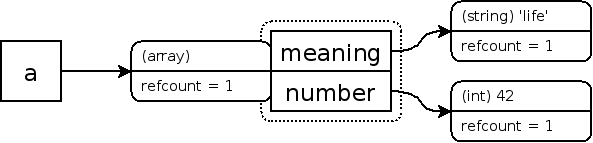
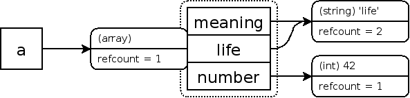
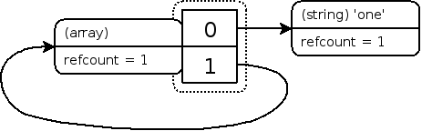

If a variable is not present in the current scope xdebug_debug_zval will return null.Основы подсчёта ссылок
Переменная PHP хранится в контейнере, называемом zval. Контейнер zval, кроме типа и значения переменной, также содержит два дополнительных бита информации. Первый называется is_ref и представляет логическое значение, указывающее, включена ли переменная в «набор ссылок» или нет. За счёт элемента is_ref PHP знает, как отличать обычные переменные от ссылок. Поскольку PHP разрешает пользовательские ссылки, которые можно создать оператором &, контейнер zval также содержит внутренний механизм подсчёта ссылок для оптимизации работы памяти. Вторая часть дополнительной информации называется refcount (счётчик ссылок) и содержит количество имён переменных (или другое название — символов), которые указывают на этот контейнер zval. Все имена переменных хранятся в таблице имён, отдельной для каждой области видимости переменных. Такая область видимости существует для главного скрипта, каждой функции и метода.
Контейнер zval создаётся при объявлении новой переменной, которой присваивается константное значение, например:
Пример #1 Создание нового контейнера zval
<?php
$a = "new string";
?>
В этом примере создаётся новый символ a в текущей области видимости
и новый контейнер переменной с типом string и значением new string.
Бит is_ref по умолчанию задаётся равным false, т. к. не создано ни одной пользовательской
ссылки. Значение же refcount задаётся равным 1, т. к. только одно имя переменной
указывает на этот контейнер. Обратите внимание, что ссылки (т. е. is_ref равно true) с refcount равным 1
обрабатываются так, как если бы они не были ссылками (то есть как is_ref было бы false).
Если установлен » Xdebug,
можете вывести эту информацию, вызвав функцию xdebug_debug_zval().
Пример #2 Вывод информации о zval
<?php
$a = "new string";
xdebug_debug_zval('a');
?>Результат выполнения приведённого примера:
a: (refcount=1, is_ref=0)='new string'
Присвоение этой переменной другой увеличивает счётчик ссылок.
Пример #3 Увеличение счётчика ссылок zval
<?php
$a = "new string";
$b = $a;
xdebug_debug_zval( 'a' );
?>Результат выполнения приведённого примера:
a: (refcount=2, is_ref=0)='new string'
Счётчик ссылок здесь равен 2, т. к.
a и b ссылаются на один
и тот же контейнер переменной. PHP достаточно умён, чтобы
не копировать контейнер, пока в этом нет необходимости. Как только
refcount станет равным нулю, контейнер уничтожается.
refcount уменьшается на единицу при уходе переменной
из области видимости (например, в конце функции) или при
удалении этой переменной (например при вызове unset()).
Пример #4 Уменьшение счётчика ссылок zval
<?php
$a = "new string";
$c = $b = $a;
xdebug_debug_zval( 'a' );
$b = 42;
xdebug_debug_zval( 'a' );
unset( $c );
xdebug_debug_zval( 'a' );
?>Результат выполнения приведённого примера:
a: (refcount=3, is_ref=0)='new string' a: (refcount=2, is_ref=0)='new string' a: (refcount=1, is_ref=0)='new string'
Если мы сейчас вызовем unset($a);,
то контейнер, включая тип и значение, будет удалён из памяти.
Составные типы данных
Всё несколько усложняется с составными типами данных, например с массивами (array) и объектами (object). В отличие от скалярных (scalar) значений, массивы и объекты хранят свойства в своих таблицах имён. То есть следующий пример создаст сразу три zval-контейнера:
Пример #5 Создание array zval
<?php
$a = array( 'meaning' => 'life', 'number' => 42 );
xdebug_debug_zval( 'a' );
?>Вывод приведённого примера будет похож на:
a: (refcount=1, is_ref=0)=array ( 'meaning' => (refcount=1, is_ref=0)='life', 'number' => (refcount=1, is_ref=0)=42 )
Графически:

Результат — три контейнера: a, meaning и number. Похожие правила применяются и для увеличения и уменьшения refcounts. Ниже мы добавляем ещё один элемент массива и устанавливаем ему значение уже существующего элемента:
Пример #6 Добавление уже существующего элемента в массив
<?php
$a = array( 'meaning' => 'life', 'number' => 42 );
$a['life'] = $a['meaning'];
xdebug_debug_zval( 'a' );
?>Вывод приведённого примера будет похож на:
a: (refcount=1, is_ref=0)=array ( 'meaning' => (refcount=2, is_ref=0)='life', 'number' => (refcount=1, is_ref=0)=42, 'life' => (refcount=2, is_ref=0)='life' )
Графически:

Из вывода Xdebug видно, что и старый и новый элементы массива
сейчас указывают на контейнер, чей refcount равен 2.
Хотя показано два контейнера со значением 'life',
но это один контейнер. Функция xdebug_debug_zval() не выводит информации об этом,
но вы можете проверить это также отобразив указатели памяти.
Элемент удаляется из массива аналогично удалению имени переменной из области видимости: уменьшается refcount-контейнер, на который ссылается элемент массива. При достижении нуля в бите refcount, контейнер удаляется из памяти. Пример:
Пример #7 Удаление элемента из массива
<?php
$a = array( 'meaning' => 'life', 'number' => 42 );
$a['life'] = $a['meaning'];
unset( $a['meaning'], $a['number'] );
xdebug_debug_zval( 'a' );
?>Вывод приведённого примера будет похож на:
a: (refcount=1, is_ref=0)=array ( 'life' => (refcount=1, is_ref=0)='life' )
Ситуация станет интереснее, если добавить массив новым элементом в самого себя. В следующем примере использован оператор присваивания по ссылке, чтобы PHP не создал копию массива.
Пример #8 Добавление массива новым элементом в самого себя
<?php
$a = array( 'one' );
$a[] =& $a;
xdebug_debug_zval( 'a' );
?>Вывод приведённого примера будет похож на:
a: (refcount=2, is_ref=1)=array ( 0 => (refcount=1, is_ref=0)='one', 1 => (refcount=2, is_ref=1)=... )
Графически:

Можно увидеть, что переменная с массивом (a), так же как и второй элемент
(1) сейчас указывают на контейнер с refcount равным 2.
Символы «...» в выводе означают рекурсию и, в этом случае,
указывают на оригинальный массив.
Как и ранее, удаление переменной уменьшает счётчик ссылок контейнера на единицу. Если применить конструкцию unset к переменной $a после этого примера, счётчик ссылок контейнера, на который указывают переменная $a и элемент 1, изменится с 2 на 1:
Пример #9 Удаление $a
(refcount=1, is_ref=1)=array ( 0 => (refcount=1, is_ref=0)='one', 1 => (refcount=1, is_ref=1)=... )
Графически:

Суть проблемы
Хотя во всех областях видимости больше нет имени переменной, ссылающейся на данную структуру, она не может быть очищена, т. к. элемент массива с ключом 1 по-прежнему ссылается на этот массив. Т. к. теперь нет никакой возможности пользователю удалить эти данные, случится утечка памяти. К счастью, PHP удалит эти данные при завершении запроса, но до этого момента данные будут занимать ценное место в памяти. Такая ситуация часто бывает, когда реализуются алгоритмы парсинга или другие, где есть дочерние элементы, ссылающиеся на родительские. Ещё чаще такая ситуация случается с объектами, потому что они всегда неявно используются по ссылке.
Не проблема, если такое случается раз или два, но если существуют тысячи или даже миллионы таких утечек памяти, то они уже станут проблемой. Особенно в долгоработающих скриптах, например, демонах, где запрос не заканчивается, или в крупных наборах модульных тестов. Последний случай вызвал проблемы при запуске модульных тестов для компонента Template из библиотеки ez Components. Иногда может потребоваться больше 2 ГБ памяти, которая не всегда есть на тестовом сервере.
＋add a note
User Contributed Notes 6 notes
Anonymous ¶
9 years ago
Anonymous ¶
9 years ago
There seems to be no way to inspect the reference count of a specific class variable but you can view the reference count of all variables in the current class instance with xdebug_debug_zval('this');
skymei at skymei dot cn ¶
4 years ago
$a = 'new string';
$b = 1;
xdebug_debug_zval('a');
xdebug_debug_zval('b');
ouputs with PHP 7.3.12 (cli)
a: (interned, is_ref=0)='new string'
b: (refcount=0, is_ref=0)=1
shkarbatov at gmail dot com ¶
6 years ago
Result of "Example #8 Adding the array itself as an element of it self" will be another for PHP7:
a: (refcount=2, is_ref=1)=array (
0 => (refcount=2, is_ref=0)='one',
1 => (refcount=2, is_ref=1)=...
)
insted of:
a: (refcount=2, is_ref=1)=array (
0 => (refcount=1, is_ref=0)='one',
1 => (refcount=2, is_ref=1)=...
)
Internal value representation in PHP 7:
https://nikic.github.io/2015/05/05/Internal-value-representation-in-PHP-7-part-1.html
yuri1308960477 at gmail dot com ¶
5 years ago
my php versoin : HP 7.1.25 (cli) (built: Dec 7 2018 08:20:45) ( NTS )
$a = 'new string';
$b = 1;
xdebug_debug_zval('a');
xdebug_debug_zval('b');
output:
a: (refcount=2, is_ref=0)='new string'
b: (refcount=0, is_ref=0)=1
if $a is a string value, 'refcount' equal 2 by defalut.
chxt2011 at 163 dot com ¶
4 years ago
my php version is PHP 7.1.6 (cli), when I run
$a = 'new string';
$b = 1;
xdebug_debug_zval('a');
xdebug_debug_zval('b');
it shows:
a: (refcount=0, is_ref=0)='new string'
b: (refcount=0, is_ref=0)=1